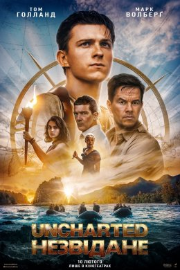
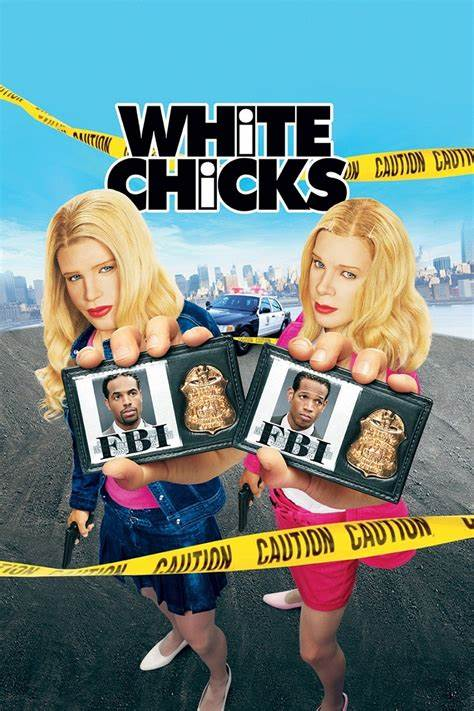
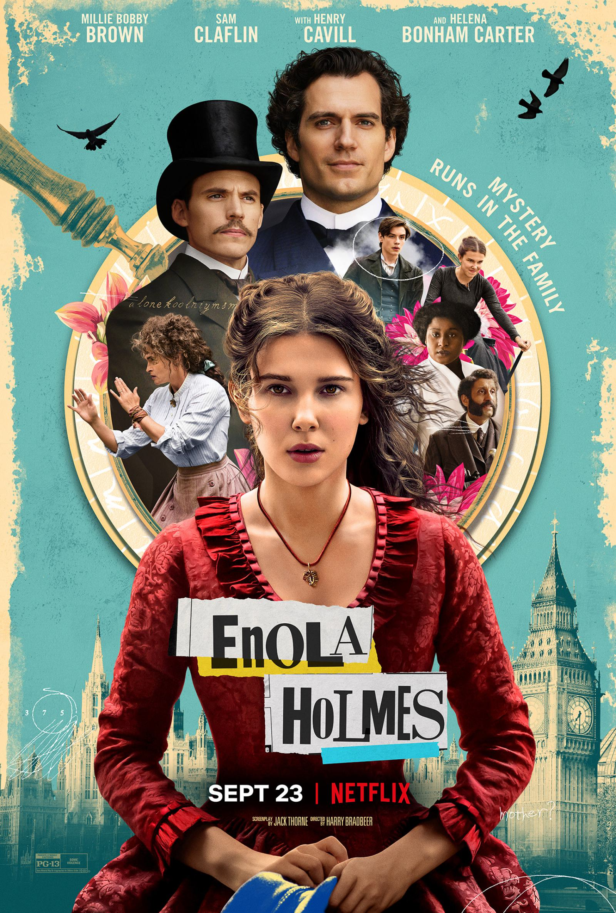

Відгуки про фільми
На цій сторінці зібрані рецензії на нові та старі фільми. Їх пишуть
запрошені автори та наші читачі. Фільми розглядаються і гарні, і не дуже.
Головна ціль відгуків – розповісти про стрічку щось таке, щоб було
зрозуміло, чи варто її дивитись.
Uncharted: Незвідане (2022)

Нейтан Дрейк все життя читав про скарби і вивчав старі карти, і коли до
нього по допомогу звертається досвідчений мисливець за старовиною Віктор
«Саллі» Салліван, вони вирушають у небезпечну подорож, щоб знайти
загублене золото команди Фернана Магеллана, що пропало 500 років тому.
Жанри:
бойовик, пригоди
White Chicks: Білі ціпоньки (2004)

Після невдалої операції по захопленню нью-йоркських наркоторговців, двох
чорношкірих агентів ФБР, брати Маркус і Кевін, бажаючи загладити вину
перед босом, викликаються охороняти сестер Уїлтон, спадкоємиць величезної
готельної імперії, яких збирається викрасти мафія. Брати розробляють
надзвичайний план охорони дівчат. Маркус і Кевін вирішує стати приманкою
для зловмисників, для чого гримуються і одягаються так, щоб зійти за
сестер Уїлтон, а спадкоємиць мільйонів ховають в надійному місці. Ось
тільки чи зможуть два афроамериканця переконати вищий світ і весь світ,
включаючи решту співробітників ФБР, а також рідних і близьких сестр
Уїлтон, в тому, що вони насправді молоді білі багачки?
Жанри:
комедія, кримінал
Enola Holmes: Енола Холмс (2020)

«Mystery runs in the family»
Коли їхня мати зникає при загадкових обставинах, Енола Холмс,
молодша сестра легендарного детектива Шерлока Холмса, тікає з дому і сама
стає приватним детективом.
Жанри:
детектив, кримінал, пригоди